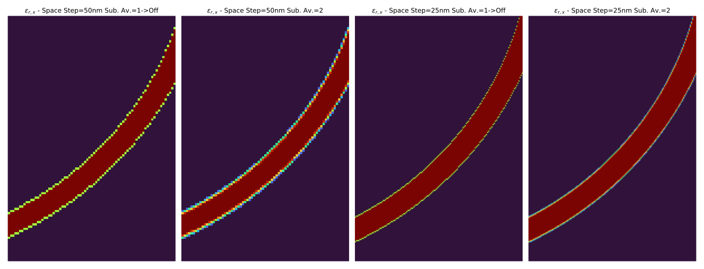
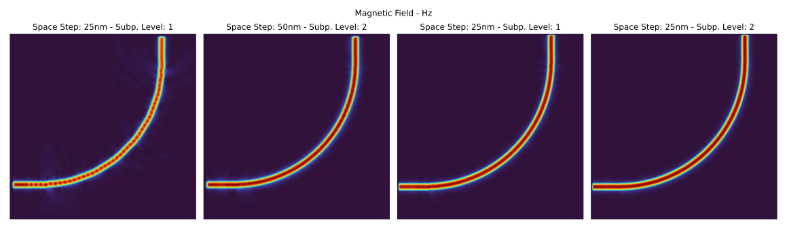
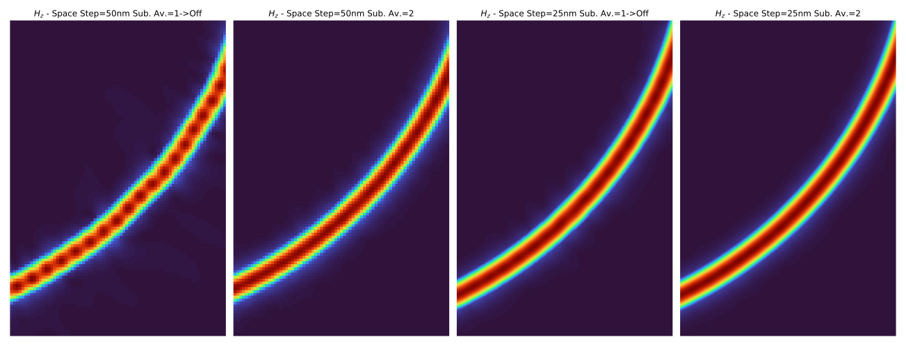
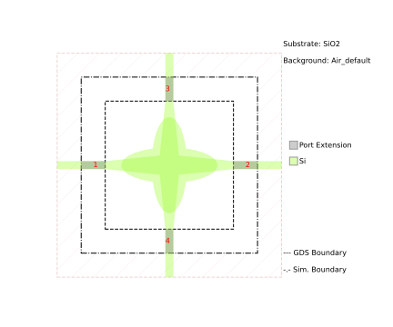
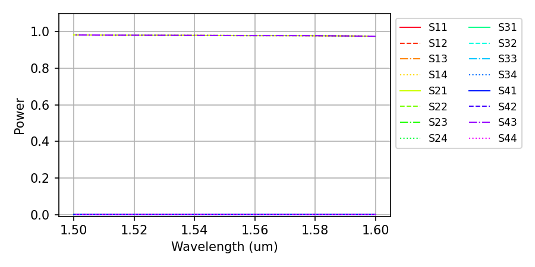
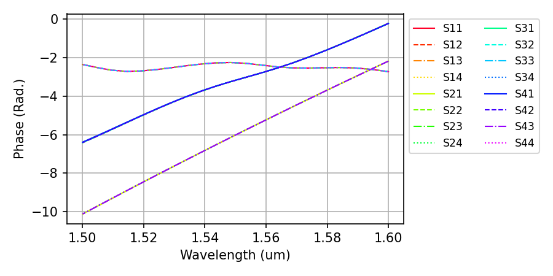
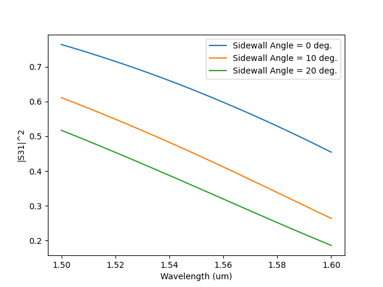

FDTD
90 Degree Bend - Subpixel Averaging
This examples shows the effect using subpixel averaging on a 90 degree bend (bend90.gds):
{kind=link}
The simulation setup in the code snippet below. It sets four different simulation settings, by changing the space step from 50 nm to 25 nm while varying the subpixel_level from 1 (off) to 2.
The post processing part consists of loading the HDF5 results file into the FDTDSimResults
objects and then using matplotlib for visualization of the data. The code is available in the following folded section.
Post Processing Code
import matplotlib.pyplot as plt
import numpy as np
import mpld3
from pyOptiShared.SimResults import FDTDSimResults
# Plotting Options
my_cmap = 'turbo' # For Colormap selection
save_svg = True # Save figure in SVG format
save_html = True # Uses mpld3 and export figure to HTML
# Load the Results Files
results_spx1 = FDTDSimResults()
results_spx1.loadHDF5('results/bend90_spx_1_50nm.hdf5')
results_spx2 = FDTDSimResults()
results_spx2.loadHDF5('results/bend90_spx_2_50nm.hdf5')
results_spx3 = FDTDSimResults()
results_spx3.loadHDF5('results/bend90_spx_1_25nm.hdf5')
results_spx4 = FDTDSimResults()
results_spx4.loadHDF5('results/bend90_spx_2_25nm.hdf5')
# Get the Material Cross sections
mat_grd_spx1 = results_spx1.permittivity.Get('EPS_X')[:,:,40].transpose()
mat_grd_spx2 = results_spx2.permittivity.Get('EPS_X')[:,:,40].transpose()
mat_grd_spx3 = results_spx3.permittivity.Get('EPS_X')[:,:,73].transpose()
mat_grd_spx4 = results_spx4.permittivity.Get('EPS_X')[:,:,73].transpose()
# Get the Fields
Hz_spx1 = results_spx1.runs[0].dftmonitors['MyDFTMonitor1'].Get('Hz')
Hz_spx2 = results_spx2.runs[0].dftmonitors['MyDFTMonitor1'].Get('Hz')
Hz_spx3 = results_spx3.runs[0].dftmonitors['MyDFTMonitor1'].Get('Hz')
Hz_spx4 = results_spx4.runs[0].dftmonitors['MyDFTMonitor1'].Get('Hz')
Hz_cs1 = Hz_spx1[11,:,:].transpose()
Hz_cs2 = Hz_spx2[11,:,:].transpose()
Hz_cs3 = Hz_spx3[11,:,:].transpose()
Hz_cs4 = Hz_spx4[11,:,:].transpose()
# General Plot Settings
def set_plot_settings(ax: plt.Axes, title:str=None) -> None:
ax.set_title(title)
ax.set_aspect('equal')
ax.grid(False)
ax.axis('off')
# HTML Saving Routine
def export_html(fig:plt.Figure, filename:str) -> None:
html_str = mpld3.fig_to_html(fig)
with open(filename+".html", "w") as f:
f.write(html_str)
# Field Comparison Plots
fig = plt.figure(figsize=(16,5))
ax = plt.subplot(1,4,1)
ax.imshow(np.abs(Hz_cs1),origin='lower',cmap=my_cmap)
set_plot_settings(ax,"Space Step: 25nm - Subp. Level: 1")
ax = plt.subplot(1,4,2)
ax.imshow(np.abs(Hz_cs2),origin='lower',cmap=my_cmap)
set_plot_settings(ax,"Space Step: 50nm - Subp. Level: 2")
ax = plt.subplot(1,4,3)
ax.imshow(np.abs(Hz_cs3),origin='lower',cmap=my_cmap)
set_plot_settings(ax,"Space Step: 25nm - Subp. Level: 1")
ax = plt.subplot(1,4,4)
ax.imshow(np.abs(Hz_cs4),origin='lower',cmap=my_cmap)
set_plot_settings(ax,"Space Step: 25nm - Subp. Level: 2")
plt.tight_layout()
plt.suptitle("Magnetic Field - Hz")
if save_svg: plt.savefig('subpixel_Hz.svg',bbox_inches='tight', pad_inches=0.2)
if save_html: export_html(fig, "subpixel_Hz")
# Field Comparison Plots - Zoomed
fig = plt.figure(figsize=(18,7))
ax = plt.subplot(1,4,1)
ax.imshow(np.abs(Hz_cs1[40:150,100:175]),origin='lower',cmap=my_cmap)
set_plot_settings(ax,"$H_z$ - Space Step=50nm Sub. Av.=1->Off")
ax = plt.subplot(1,4,2)
ax.imshow(np.abs(Hz_cs2[40:150,100:175]),origin='lower',cmap=my_cmap)
set_plot_settings(ax,"$H_z$ - Space Step=50nm Sub. Av.=2")
ax = plt.subplot(1,4,3)
ax.imshow(np.abs(Hz_cs3[80:300,200:350]),origin='lower',cmap=my_cmap)
set_plot_settings(ax,"$H_z$ - Space Step=25nm Sub. Av.=1->Off")
ax = plt.subplot(1,4,4)
ax.imshow(np.abs(Hz_cs4[80:300,200:350]),origin='lower',cmap=my_cmap)
set_plot_settings(ax,"$H_z$ - Space Step=25nm Sub. Av.=2")
plt.tight_layout()
if save_svg: plt.savefig('subpixel_Hz_zoomed.svg',bbox_inches='tight', pad_inches=0.2)
if save_html: export_html(fig, "subpixel_Hz_zoomed")
# Material Comparison Plots - Zoomed
fig = plt.figure(figsize=(18,7))
ax = plt.subplot(1,4,1)
ax.imshow(np.real(mat_grd_spx1[40:150,100:175]),origin='lower',cmap=my_cmap)
set_plot_settings(ax,"$\\epsilon_{r,x}$ - Space Step=50nm Sub. Av.=1->Off")
ax = plt.subplot(1,4,2)
ax.imshow(np.real(mat_grd_spx2[40:150,100:175]),origin='lower',cmap=my_cmap)
set_plot_settings(ax,"$\\epsilon_{r,x}$ - Space Step=50nm Sub. Av.=2")
ax = plt.subplot(1,4,3)
ax.imshow(np.real(mat_grd_spx3[80:300,200:350]),origin='lower',cmap=my_cmap)
set_plot_settings(ax,"$\\epsilon_{r,x}$ - Space Step=25nm Sub. Av.=1->Off")
ax = plt.subplot(1,4,4)
ax.imshow(np.real(mat_grd_spx4[80:300,200:350]),origin='lower',cmap=my_cmap)
set_plot_settings(ax,"$\\epsilon_{r,x}$ - Space Step=25nm Sub. Av.=2")
plt.tight_layout()
if save_svg: plt.savefig('subpixel_epsx_zoomed.svg',bbox_inches='tight', pad_inches=0.2)
if save_html: export_html(fig, "subpixel_epsx_zoomed")
# Get Wavelength and S21 Data
lam = abs(results_spx1.sparameters['S21'].Get('wavelength'))
# Get SParameter Data - S21 - Tranmission
s21_spx1 = results_spx1.sparameters['S21'].Get('data')
s21_spx2 = results_spx2.sparameters['S21'].Get('data')
s21_spx3 = results_spx3.sparameters['S21'].Get('data')
s21_spx4 = results_spx4.sparameters['S21'].Get('data')
# Plot Transmittance - |S21|^2
fig = plt.figure()
fig.suptitle('Transmittance - $|S_{21}|^2$')
plt.plot(lam,abs(s21_spx1)**2,label="Space Step=50nm Sub. Av.=1->Off",linestyle='--')
plt.plot(lam,abs(s21_spx2)**2,label="Space Step=50nm Sub. Av.=2",linestyle='--')
plt.plot(lam,abs(s21_spx3)**2,label="Space Step=25nm Sub. Av.=1->Off")
plt.plot(lam,abs(s21_spx4)**2,label="Space Step=25nm Sub. Av.=2")
plt.xlabel('Wavelength (um)')
plt.ylabel('Amplitude')
plt.legend(loc="center right")
if save_svg: plt.savefig('subpixel_s21.svg',bbox_inches='tight', pad_inches=0.2)
if save_html: export_html(fig, "subpixel_s21")
# Get SParameter Data - S11 - Reflection
s11_spx1 = results_spx1.sparameters['S11'].Get('data')
s11_spx2 = results_spx2.sparameters['S11'].Get('data')
s11_spx3 = results_spx3.sparameters['S11'].Get('data')
s11_spx4 = results_spx4.sparameters['S11'].Get('data')
# Plot Reflectance - |S11|^2
fig = plt.figure()
fig.suptitle('Reflectance - $|S_{11}|^2$')
plt.plot(lam,abs(s11_spx1)**2,label="Space Step=50nm Sub. Av.=1->Off",linestyle='--')
plt.plot(lam,abs(s11_spx2)**2,label="Space Step=50nm Sub. Av.=2",linestyle='--')
plt.plot(lam,abs(s11_spx3)**2,label="Space Step=25nm Sub. Av.=1->Off")
plt.plot(lam,abs(s11_spx4)**2,label="Space Step=25nm Sub. Av.=2")
plt.xlabel('Wavelength (um)')
plt.ylabel('Amplitude')
plt.legend(loc="upper right")
if save_svg: plt.savefig('subpixel_s11.svg',bbox_inches='tight', pad_inches=0.2)
if save_html: export_html(fig, "subpixel_s11")
plt.show()
Permittivity Profile
The permittivity plots show the averaging of the material properties, specialy at curved locations. The subpixel averaging allows better description of the material properties on thos conditions, reducing the stair-casing of the permittivity profile.
{kind=link}

Field Profiles
In the full field plots, it is possible to see that a coarse mesh without subpixel averaging presents field leakage as the mode propagates thorugh the bend. It gets reduces as we add the subpixel averaging. Increasing the subpixel averaging can provide similar results to those of almost halfing the space step.
{kind=link}

Zoomed Field Profiles:
It is more obivoues the fields looks smoother at a higher subpixel level. Usualy, level two is enough, as higher levels, might deteriorate the meshing process, without relevant increase in the results accuracy.
{kind=link}

Transmittance:
It is clear that the 50nm mesh is not enough for properly capturing the reflection and transmission of the bend. Reducing the space-step improves the results while, increasing the subpixel average improves the accuracy of the results without sacrificing simulation time.
Reflecttance:
Similar to the transmittance results, the reflecttance gets improved with subpixel averaging, lowering the reflection and making them more accurate as the subpixel level gets increased to two.
Waveguide - Run FDTD simulation from a function
Similarly for this example, we are going to simulate a straight waveguide from a user defined function.
from pyOptiShared.DeviceGeometry import DeviceGeometry
from pyOptiShared.LayerInfo import LayerStack
from pyOptiShared.Material import ConstMaterial
from pyFDTDKernel.pyFDTDSolver import pyFDTDSolver
# Material Settings
si02_mat = ConstMaterial(mat_name="SiO2", epsReal=1.45**2,color='lightgreen')
si_mat = ConstMaterial(mat_name="Si", epsReal=3.5**2,color='lightblue')
air_mat = ConstMaterial(mat_name="Air", epsReal=1**2,color='lightyellow')
# Layer Stack Settings
layer_stack = LayerStack()
layer_stack.addLayer(name="L1", number=1, thickness=0.22, zmin=0.0,
material=si_mat, cladding=si02_mat,
sideWallAng=0)
layer_stack.setBGandSub(background=si02_mat, substrate=si02_mat)
def waveguide(port_width=0.4,waveguide_length=5.00,input_port_center=(0,0),layer=1):
vertices=[(input_port_center[0],input_port_center[1]-(port_width/2)),
(input_port_center[0]+waveguide_length,input_port_center[1]-(port_width/2)),
(input_port_center[0]+waveguide_length,input_port_center[1]+(port_width/2)),
(input_port_center[0],input_port_center[1]+(port_width/2))]
return [(vertices,layer)]
parameters=(0.4,5.00,(0,0),1) # (port_width,waveguide_length,input_port_center,layer)
#Device Geometry Settings
device_geometry = DeviceGeometry()
device_geometry.SetFromFun(
layer_stack=layer_stack,
func=waveguide,
parameters=parameters,
buffers={'x':1.5,'y':1.5,'z':1.5})
device_geometry.SetAutoPortSettings(direction='x',port_buffer=1,edge_tol_x=1e-1)
device_geometry.PrintPorts()
# Simulation Settings and Runs
lmin = 1.5
lmax = 1.6
lcen = (lmax+lmin)/2
npts=3
tfinal = 1500
fdtd_solver = pyFDTDSolver()
fdtd_solver.SetPorts(profile="gaussian-pw", lcenter=lcen, lmin=lmin, lmax=lmax, npts=npts, mode_indices=0,symmetries='1x1')
fdtd_solver.AddDFTMonitor(mon_type="2d-z-normal", z0=0.11, name="MyDFTMonitor1",
lmin=lmin, lmax=lmax,npts=npts,
save_ex=True, save_ey=True, save_ez=True,
save_hx=True, save_hy=True, save_hz=True)
fdtd_solver.SetSimSettings(sim_time=tfinal, space_step=0.050, subpixel_level=2, save_path=r"results",results_filename='waveguide_spx_1_50nm',
device_geometry = device_geometry,export_mat_grid=True)
results = fdtd_solver.Run()
results.PlotPermittivity(position=0.11)
results.PlotDFTMonitor('MyDFTMonitor1',field='Ey')
It is also possible to run sweeps on the function by using UpdateScriptParams which updates the parameters getting passed to the device gemoetry.
Note: you still need to call the solver SetSimSettings so that the device geometry update takes effect.
from pyOptiShared.DeviceGeometry import DeviceGeometry
from pyOptiShared.LayerInfo import LayerStack
from pyOptiShared.Material import ConstMaterial
from pyFDTDKernel.pyFDTDSolver import pyFDTDSolver
import numpy as np
# Material Settings
si02_mat = ConstMaterial(mat_name="SiO2", epsReal=1.45**2,color='lightgreen')
si_mat = ConstMaterial(mat_name="Si", epsReal=3.5**2,color='lightblue')
air_mat = ConstMaterial(mat_name="Air", epsReal=1**2,color='lightyellow')
# Layer Stack Settings
layer_stack = LayerStack()
layer_stack.addLayer(name="L1", number=1, thickness=0.22, zmin=0.0,
material=si_mat, cladding=si02_mat,
sideWallAng=0)
layer_stack.setBGandSub(background=si02_mat, substrate=si02_mat)
def waveguide(port_width=0.4,waveguide_length=1.00,input_port_center=(0,0),layer=1):
vertices=[(input_port_center[0],input_port_center[1]-(port_width/2)),
(input_port_center[0]+waveguide_length,input_port_center[1]-(port_width/2)),
(input_port_center[0]+waveguide_length,input_port_center[1]+(port_width/2)),
(input_port_center[0],input_port_center[1]+(port_width/2))]
return [(vertices,layer)]
min_width=0.3
max_width=0.8
num_points=6
widths=np.linspace(min_width,max_width,num_points)
parameters=(widths[0],5.00,(0,0),1) # (port_width,waveguide_length,input_port_center,layer)
#Device Geometry Settings
device_geometry = DeviceGeometry()
device_geometry.SetFromFun(
layer_stack=layer_stack,
func=waveguide,
parameters=parameters,
buffers={'x':1.5,'y':1.5,'z':1.5}
)
device_geometry.SetAutoPortSettings(direction='x',port_buffer=1,min=[0.1,0.51],max=[0.55,0.55])
# Simulation Settings and Runs
lmin = 1.5
lmax = 1.6
lcen = (lmax+lmin)/2
npts=21
tfinal = 1500
fdtd_solver = pyFDTDSolver()
fdtd_solver.SetPorts(profile="gaussian-pw", lcenter=lcen, lmin=lmin, lmax=lmax, npts=npts, mode_indices=0,symmetries='1x1')
fdtd_solver.AddDFTMonitor(mon_type="2d-z-normal", z0=0.11, name="MyDFTMonitor1",
lmin=lmin, lmax=lmax,npts=npts,
save_ex=True, save_ey=True, save_ez=True,
save_hx=True, save_hy=True, save_hz=True)
for w in widths:
results_filename='waveguide_spx_1_50nm_sweep_'+str(w)
print('solving for width : ', w)
params=(w,5.00,(0,0),1)
device_geometry.UpdateScriptParams(params)
fdtd_solver.SetSimSettings(sim_time=tfinal, space_step=0.050, subpixel_level=1, save_path=r"results",results_filename=results_filename,
device_geometry = device_geometry,export_mat_grid=True)
results = fdtd_solver.Run()
results.PlotPermittivity(position=0.11)
results.PlotDFTMonitor('MyDFTMonitor1',field='Ey')
Waveguide - Run FDTD simulation from a function (gdstk)
The function output can also be a gdstk library.
from pyOptiShared.DeviceGeometry import DeviceGeometry
from pyOptiShared.LayerInfo import LayerStack
from pyOptiShared.Material import ConstMaterial
from pyFDTDKernel.pyFDTDSolver import pyFDTDSolver
from pyOptiShared.Designs import flex_taper
import numpy as np
# Material Settings
si02_mat = ConstMaterial(mat_name="SiO2", epsReal=1.45**2,color='lightgreen')
si_mat = ConstMaterial(mat_name="Si", epsReal=3.5**2,color='lightblue')
air_mat = ConstMaterial(mat_name="Air", epsReal=1**2,color='lightyellow')
# Layer Stack Settings
layer_stack = LayerStack()
layer_stack.addLayer(name="L1", number=1, thickness=0.22, zmin=0.0,
material=si_mat, cladding=si02_mat,
sideWallAng=0)
layer_stack.setBGandSub(background=si02_mat, substrate=si02_mat)
widths=np.linspace(0.3,1.0,5)
parameters=(widths,0.3,1.0,0.5,2.0,20,1,False)
#Device Geometry Settings
device_geometry = DeviceGeometry()
device_geometry.SetFromFun(
layer_stack=layer_stack,
func=flex_taper,
parameters=parameters,
buffers={'x':1.5,'y':1.5,'z':1.5})
device_geometry.SetAutoPortSettings(direction='x',port_buffer=1)
# Simulation Settings and Runs
lmin = 1.5
lmax = 1.6
lcen = (lmax+lmin)/2
npts=3
tfinal = 1500
fdtd_solver = pyFDTDSolver()
fdtd_solver.SetPorts(profile="gaussian-pw", lcenter=lcen, lmin=lmin, lmax=lmax, npts=npts, mode_indices=0,symmetries='1x1')
fdtd_solver.AddDFTMonitor(mon_type="2d-z-normal", z0=0.11, name="MyDFTMonitor1",
lmin=lmin, lmax=lmax,npts=npts,
save_ex=True, save_ey=True, save_ez=True,
save_hx=True, save_hy=True, save_hz=True)
fdtd_solver.SetSimSettings(sim_time=tfinal, space_step=0.0250, subpixel_level=2, save_path=r"results",results_filename='flex_taper',
device_geometry = device_geometry,export_mat_grid=True)
results = fdtd_solver.Run()
results.PlotPermittivity(position=0.11)
results.PlotDFTMonitor('MyDFTMonitor1',field='Ey')
Splitter - Field over Device Strucutre Outline
For this example we are going to simulate a splitter (splitter.gds) and
then create an image with a DFT monitored field overlapping with the device structure outline.
{kind=link}
In this particular example we make use of the DFT Monitor to monitor the frequency content of the fields, so we can plot a particular component and wavelength over the device structure outline. The python script for this simulation is presented in the following code snipet:
from pyOptiShared.DeviceGeometry import DeviceGeometry
from pyOptiShared.LayerInfo import LayerStack
from pyOptiShared.Material import ConstMaterial
from pyFDTDKernel.pyFDTDSolver import pyFDTDSolver
# Define Materials
si02_mat = ConstMaterial(mat_name="SiO2", epsReal=1.45**2,color='lightgreen')
si_mat = ConstMaterial(mat_name="Si", epsReal=3.5**2,color='lightblue')
air_mat = ConstMaterial(mat_name="Air", epsReal=1**2,color='lightyellow')
# Creates the Layer Stack
layer_stack = LayerStack()
layer_stack.addLayer(name="L1", number=1, thickness=0.22, zmin=0.0,
material=si_mat, cladding=si02_mat,
sideWallAng=0)
layer_stack.setBGandSub(background=si02_mat, substrate=si02_mat)
# Defines the Device Geometry
device_geometry = DeviceGeometry()
device_geometry.SetFromGDS(
layer_stack=layer_stack,
gds_file='splitter.gds',
buffers={'x':1.5,'y':1.5,'z':1.5}
)
device_geometry.SetAutoPortSettings(direction='x',port_buffer=1)
# General Simulation Settings and Simulation Run
lmin = 1.5
lmax = 1.6
lcen = (lmax+lmin)/2
npts=21
tfinal = 550
fdtd_solver = pyFDTDSolver()
fdtd_solver.SetPorts(profile="gaussian-pw", lcenter=lcen, lmin=lmin, lmax=lmax, npts=npts, mode_indices = 0,symmetries='1x2')
fdtd_solver.AddDFTMonitor(mon_type="2d-z-normal", z0=0.11, name="MyDFTMonitor1",
lmin=lmin, lmax=lmax,npts=npts,
save_hz=True)
fdtd_solver.SetSimSettings(sim_time=tfinal, space_step=0.05, subpixel_level=2, save_path=r"results",results_filename='splitter',
device_geometry = device_geometry,auto_shutoff_limit=1e-3)
results = fdtd_solver.Run()
Once the simulation is over we can then use a post processing script to read the results, get the DFT Monitor data and then plot that with the outline of the device structure.
Post Processing Code
import numpy as np
import matplotlib.pyplot as plt
from matplotlib.patches import Polygon
from mpl_toolkits.axes_grid1 import make_axes_locatable
import gdstk
from pyOptiShared.SimResults import FDTDSimResults
# Loading the Results
results = FDTDSimResults()
results.loadHDF5('results/splitter.hdf5')
res = results.runs[0].dftmonitors["MyDFTMonitor1"]
x_ax = res.Get('x_axis')
y_ax = res.Get('y_axis')
lib = gdstk.read_gds('splitter.gds')
poly = lib.cells[1].polygons[0]
(xmin,ymin),(xmax,ymax) = poly.bounding_box()
hz_field = res.Get('Hz')
# Plotting the real part of the field
hz_real = np.real(hz_field)
hz_real = hz_real[5,:,:].transpose()
hz_real = hz_real-np.min(hz_real)
hz_real = hz_real/np.max(hz_real)
hz_real = 2*(hz_real-0.5)
fig, ax = plt.subplots()
im = ax.pcolormesh(x_ax,y_ax,hz_real,cmap='seismic',vmin=-1, vmax=1)
ax.set_xlim([xmin,xmax])
ax.set_ylim([ymin,ymax])
polygon = Polygon(poly.points, edgecolor='black', facecolor='none',linewidth=1,ls='--')
ax.add_patch(polygon)
ax.set_aspect('equal')
divider = make_axes_locatable(ax)
cax = divider.append_axes('right', size='5%', pad=0.05)
fig.colorbar(im,cax=cax ,orientation='vertical')
ax.set_xlabel("x (um)")
ax.set_ylabel("y (um)")
ax.set_title("Re{Hz}")
plt.savefig("splitter_hz_outline.svg", format="svg", bbox_inches="tight", dpi=300)
plt.show()

Waveguide Crossing - Using Port Symmetry
To accelerate simulation pyFDTD supports the specification of port symmetries.
For this example we are going to use a waveguide crossing (etchedCrossing).
Due to its symmetries only one port needs to be excited and all the s-parameters can be inferred from that single run.
The device geometry and its symmetry can be viewed in the following image:
{kind=link}

Therefore we specifying symmetries in the SetPorts() method to:
symmetries = {"1_2":"2_1","2_2":"1_1","3_2":"4_1","4_2":"3_1",
"1_3":"3_1","2_3":"3_1","3_3":"1_1","4_3":"2_1",
"1_4":"4_1","2_4":"4_1","3_4":"2_1","4_4":"1_1",}
The logic is that each s-parameter is defined by a string i_j where i and j are port numbers.
By convention i is the monitored port, j is the excited port.
Following a python dictionary, the key is the s-s-parameter reference that will receive the
s-parameter results from the value. For example, the first item: "1_2":"2_1" indicates that
the s-parameter S12 is equal to S21. Closer look at the combinations, will see that all j in the value’s
are equal to 1. Thus, only port 1 will be excited.
Alternatively predefined symmetry options can be used. For example waveguide crossing symmetry can be defined by setting symmetries=’4x’ instead of defining individual port combinations.
Predefined symmetry options can be found in the SetPorts method.
The full simulation setup is presented in the follow code snipet:
from pyOptiShared.LayerInfo import LayerStack
from pyOptiShared.Material import ConstMaterial
from pyOptiShared.DeviceGeometry import DeviceGeometry
from pyFDTDKernel.pyFDTDSolver import pyFDTDSolver
##########################################
### Material Settings ###
##########################################
SiO2 = ConstMaterial(mat_name="SiO2", epsReal=1.45**2)
Si = ConstMaterial(mat_name="Si", epsReal=3.5**2)
##########################################
### Layer Stack Settings ###
##########################################
layer_stack = LayerStack()
layer_stack.addLayer(name="L1", number=1, thickness=0.22, zmin=0.0,
material=Si, cladding="Air_default")
layer_stack.addLayer(name="L2", number=2, thickness=0.13, zmin=0.0,
material=Si, cladding="Air_default")
layer_stack.setBGandSub(background="Air_default", substrate=SiO2)
##########################################
### Device Geometry/Port Settings ###
##########################################
device_geometry = DeviceGeometry()
device_geometry.SetFromGDS(
layer_stack=layer_stack,
gds_file=r"etchedCrossing.gds",
buffers={'x':1.5,'y':1.5,'z':1.5}
)
device_geometry.SetAutoPortSettings(
direction="both",
port_buffer=1.0,
)
device_geometry.PlotGDS()
device_geometry.PlotGDSXSection(direction='y',pos=-1.5)
##########################################
### FDTD Settings ###
##########################################
fdtd_solver = pyFDTDSolver()
fdtd_solver.SetPorts(profile="gaussian-pw", lcenter=1.55, lmin=1.5, lmax=1.6, npts=21, mode_indices=0,
symmetries = {"1_2":"2_1","2_2":"1_1","3_2":"4_1","4_2":"3_1",
"1_3":"3_1","2_3":"3_1","3_3":"1_1","4_3":"2_1",
"1_4":"4_1","2_4":"4_1","3_4":"2_1","4_4":"1_1",})
fdtd_solver.AddDFTMonitor(mon_type="2d-z-normal", z0=0.125, name="MyDFTMonitor1",
lmin=1.5, lmax=1.6,npts=12,
save_ex=True, save_ey=True, save_ez=True,
save_hx=True, save_hy=True, save_hz=True)
fdtd_solver.SetBoundaries()
fdtd_solver.SetSimSettings(sim_time=1500, space_step=0.050, subpixel_level=2, save_path=r"results",results_filename='etchedCrossing',
device_geometry = device_geometry, export_mat_grid=True)
##########################################
### Run and Post Processing ###
##########################################
results = fdtd_solver.Run()
results.PlotSParameters(snp='ALL',plot_type='power')
results.PlotDFTMonitor('MyDFTMonitor1',field='Hx')
results.PlotSParameters(snp='ALL',plot_type='phase')
The resulting S-Parameters can be observed in the final plotting:
{kind=link}

{kind=link}

Directional Coupler - Sidewall Angle
from pyOptiShared.DeviceGeometry import DeviceGeometry
from pyOptiShared.LayerInfo import LayerStack
from pyOptiShared.Material import ConstMaterial
from pyFDTDKernel.pyFDTDSolver import pyFDTDSolver
import matplotlib.pyplot as plt
import gdstk
filename = "coupler.gds"
length = 25
width1 = 0.5
width2 = 0.5
gap = 0.15+0.25
lib = gdstk.Library()
strt_wg = lib.new_cell("Straight_WG")
vertices1 = [(0, -width1/2+gap), (length, -width1/2+gap), (length, width1/2+gap), (0, width1/2+gap)]
vertices2 = [(0, -width2/2-gap), (length, -width2/2-gap), (length, width2/2-gap), (0, width2/2-gap)]
strt_wg.add(gdstk.Polygon(vertices1, layer=1))
strt_wg.add(gdstk.Polygon(vertices2, layer=1))
lib.write_gds(filename)
sidewall_angles = [0,10,20]
for swa in sidewall_angles:
# Define Materials
si02_mat = ConstMaterial(mat_name="SiO2", epsReal=1.45**2,color='lightgreen')
si_mat = ConstMaterial(mat_name="Si", epsReal=3.5**2,color='lightblue')
air_mat = ConstMaterial(mat_name="Air", epsReal=1**2,color='lightyellow')
# Creates the Layer Stack
layer_stack = LayerStack()
layer_stack.addLayer(name="L1", number=1, thickness=0.22, zmin=0.0,
material=si_mat, cladding=si02_mat,
sideWallAng=swa)
layer_stack.setBGandSub(background=si02_mat, substrate=si02_mat)
# Defines the Device Geometry
device_geometry = DeviceGeometry()
device_geometry.SetFromGDS(
layer_stack=layer_stack,
gds_file='coupler.gds',
buffers={'x':1.0,'y':1.0,'z':1.0}
)
device_geometry.SetAutoPortSettings(direction='x',port_buffer=0.5)
# General Simulation Settings and Simulation Run
lmin = 1.5
lmax = 1.6
lcen = (lmax+lmin)/2
npts=21
tfinal = 550
fdtd_solver = pyFDTDSolver()
fdtd_solver.SetPorts(profile="gaussian-pw", lcenter=lcen, lmin=lmin, lmax=lmax, npts=npts, mode_indices = 0,symmetries='2x2')
fdtd_solver.AddDFTMonitor(mon_type="2d-z-normal", z0=0.11, name="MyDFTMonitor1",
lmin=lmin, lmax=lmax,npts=npts,
save_hz=True)
fdtd_solver.SetSimSettings(sim_time=tfinal, space_step=0.05, subpixel_level=2, save_path=r"results",results_filename='coupler_sidewall',
device_geometry = device_geometry,auto_shutoff_limit=1e-3,export_mat_grid=True)
results = fdtd_solver.Run()
s21 = results.sparameters['S31'].Get('data')
lam = results.sparameters['S31'].Get('wavelength')
plt.plot(lam,abs(s21)**2,label='Sidewall Angle = {} deg.'.format(swa))
plt.xlabel('Wavelength (um)')
plt.ylabel('|S31|^2')
plt.legend()
plt.show()
{kind=link}

Taper - Domain Limits for GDSII/STL
Below are two examples showing how limiting the domain can be used to reduce the memory requirements and improve simulation time.
from pyOptiShared.DeviceGeometry import DeviceGeometry
from pyOptiShared.LayerInfo import LayerStack
from pyOptiShared.Material import ConstMaterial
from pyFDTDKernel.pyFDTDSolver import pyFDTDSolver
import gdstk
filename = "taper.gds"
length = 2
width1 = 0.5
lib = gdstk.Library()
strt_wg = lib.new_cell("taper")
vertices1 = [(5.0, -0.75), (0.0, -0.25), (0.0, 0.25), (5.0, 0.75)]
vertices2 = [(5.0, -3.75), (0.0, -3.25), (0.0, 3.25), (5.0, 3.75)]
strt_wg.add(gdstk.Polygon(vertices1, layer=1))
strt_wg.add(gdstk.Polygon(vertices2, layer=3))
lib.write_gds(filename)
# Material Settings
si02_mat = ConstMaterial(mat_name="SiO2", epsReal=1.45**2,color='lightgreen')
si_mat = ConstMaterial(mat_name="Si", epsReal=3.5**2,color='lightblue')
air_mat = ConstMaterial(mat_name="Air", epsReal=1**2,color='lightyellow')
# Layer Stack Settings
layer_stack = LayerStack()
layer_stack.addLayer(name="L1", number=1, thickness=0.22, zmin=0.0,
material=si_mat, cladding=si02_mat,
sideWallAng=0)
layer_stack.addLayer(name="L2", number=3, thickness=0.09, zmin=0.0,
material=si_mat, cladding=si02_mat,
sideWallAng=0)
layer_stack.setBGandSub(background=si02_mat, substrate=si02_mat)
#Device Geometry Settings
device_geometry = DeviceGeometry()
domain_limits = dict()
domain_limits['x'] = [-50,50]
domain_limits['y'] = [-1,1]
domain_limits['z'] = [-2,2]
device_geometry.SetFromGDS(
gds_file='taper.gds',
layer_stack=layer_stack,
buffers={'x':1.0,'y':1.0,'z':1.0},
domain_limits=domain_limits)
device_geometry.SetAutoPortSettings(direction='x',port_buffer=1,min=0,max=50)
# Simulation Settings and Runs
lmin = 1.5
lmax = 1.6
lcen = (lmax+lmin)/2
npts=51
tfinal = 1500
fdtd_solver = pyFDTDSolver()
fdtd_solver.SetPorts(profile="gaussian-pw", lcenter=lcen, lmin=lmin, lmax=lmax, npts=npts, mode_indices=0,symmetries='1x1')
fdtd_solver.AddDFTMonitor(mon_type="2d-z-normal", z0=0.11, name="MyDFTMonitor1",
lmin=lmin, lmax=lmax,npts=npts,
save_ex=True, save_ey=True, save_ez=True,
save_hx=True, save_hy=True, save_hz=True)
fdtd_solver.SetSimSettings(sim_time=tfinal, space_step=0.05, subpixel_level=2, save_path=r"results",results_filename='taper',
device_geometry = device_geometry,export_mat_grid=True)
results = fdtd_solver.Run()
results.PlotDFTMonitor(mon_name='MyDFTMonitor1',field='Hz')
results.PlotPermittivity(cut='x',position=-0.5)
results.PlotPermittivity(cut='x',position=3)
results.PlotPermittivity(cut='z',position=0.11)
results.PlotSParameters()
from pyOptiShared.DeviceGeometry import DeviceGeometry
from pyOptiShared.Material import ConstMaterial
from pyFDTDKernel.pyFDTDSolver import pyFDTDSolver
import pyvista as pv
import numpy as np
def extrude_and_export(filename,vertices,height):
# Create the base polygon using PolyData
n_points = len(vertices)
faces = [n_points] + list(range(n_points)) # [n, 0, 1, 2, ..., n-1]
polygon = pv.PolyData(vertices, faces=faces)
# Extrude the polygon along the Z-axis
extrusion_height = height
extruded_mesh = polygon.extrude([0, 0, extrusion_height], capping=True)
# Save as STL file
extruded_mesh.save(filename)
vertices1 = np.array([(5.0, -0.75,0), (0.0, -0.25,0), (0.0, 0.25,0), (5.0, 0.75,0)])
vertices2 = np.array([(5.0, -3.75,0), (0.0, -3.25,0), (0.0, 3.25,0), (5.0, 3.75,0)])
extrude_and_export('taper_1_0.stl',vertices1,0.22)
extrude_and_export('taper_3_0.stl',vertices2,0.09)
# Material Settings
si02_mat = ConstMaterial(mat_name="SiO2", epsReal=1.45**2,color='lightgreen')
si_mat = ConstMaterial(mat_name="Si", epsReal=3.5**2,color='lightblue')
air_mat = ConstMaterial(mat_name="Air", epsReal=1**2,color='lightyellow')
stl_dict = dict()
stl_dict['taper_1_0.stl'] = si_mat
stl_dict['taper_3_0.stl'] = si_mat
#Device Geometry Settings
device_geometry = DeviceGeometry()
domain_limits = dict()
domain_limits['x'] = [-50,50]
domain_limits['y'] = [-1,1]
domain_limits['z'] = [-2,2]
device_geometry.SetFromSTL(
stl_dict=stl_dict,
background_material=si02_mat,
buffers={'x':1.0,'y':1.0,'z':1.0},
domain_limits=domain_limits)
device_geometry.SetAutoPortSettings(direction='x',port_buffer=1,min=0.1,max=2.51)
#device_geometry.PrintPorts()
device_geometry.PlotSTL()
# Simulation Settings and Runs
lmin = 1.5
lmax = 1.6
lcen = (lmax+lmin)/2
npts=51
tfinal = 1500
fdtd_solver = pyFDTDSolver()
fdtd_solver.SetPorts(profile="gaussian-pw", lcenter=lcen, lmin=lmin, lmax=lmax, npts=npts, mode_indices=0,symmetries='1x1')
fdtd_solver.AddDFTMonitor(mon_type="2d-z-normal", z0=0.11, name="MyDFTMonitor1",
lmin=lmin, lmax=lmax,npts=npts,
save_ex=True, save_ey=True, save_ez=True,
save_hx=True, save_hy=True, save_hz=True)
fdtd_solver.SetSimSettings(sim_time=tfinal, space_step=0.05, subpixel_level=2, save_path=r"results",results_filename='coupler',
device_geometry = device_geometry,export_mat_grid=True)
results = fdtd_solver.Run()
results.PlotDFTMonitor(mon_name='MyDFTMonitor1',field='Hz')
results.PlotPermittivity(cut='x',position=-0.5)
results.PlotPermittivity(cut='x',position=3)
results.PlotPermittivity(cut='z',position=0.11)
results.PlotSParameters()